折斧兵
unit.yin.axeunit · 已绑定运行资源
Godot纸偶分件


运行头像
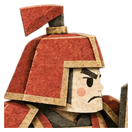
116个稳定资产ID。查看Godot实际使用的切图、头部头像、53张分件、图标和正式40秒音乐。此页用于素材查阅；动作、命中和设备验收以Godot运行与报告为准。
unit.yin.axeunit · 已绑定运行资源

unit.yin.spearunit · 已绑定运行资源


unit.yin.hammerunit · 已绑定运行资源


unit.yin.cannonunit · 已绑定运行资源


unit.yin.workerunit · 已绑定运行资源


portrait.yin.commanderportrait · 已绑定运行资源
unit.mo.bladeunit · 已绑定运行资源


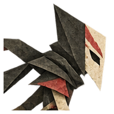
unit.mo.needleunit · 已绑定运行资源


unit.mo.priestunit · 已绑定运行资源


unit.mo.giantunit · 已绑定运行资源


unit.mo.workerunit · 已绑定运行资源


unit.mo.thrallunit · 已绑定运行资源


unit.deng.mirrorunit · 已绑定运行资源


unit.deng.fireunit · 已绑定运行资源


unit.deng.shadowunit · 已绑定运行资源


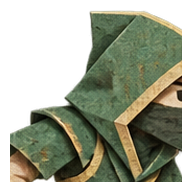
unit.deng.effigyunit · 已绑定运行资源


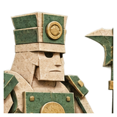
unit.deng.workerunit · 已绑定运行资源


unit.deng.guardianunit · 已绑定运行资源


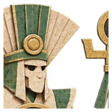
portrait.mo.commanderportrait · 已绑定运行资源
portrait.deng.commanderportrait · 已绑定运行资源
spell.yin.repairspell · 已绑定运行资源
spell.yin.lightningspell · 已绑定运行资源
spell.yin.coldspell · 已绑定运行资源
spell.yin.furyspell · 已绑定运行资源
spell.yin.stampspell · 已绑定运行资源
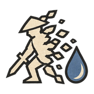
spell.mo.sacrificespell · 已绑定运行资源
spell.mo.bindspell · 已绑定运行资源
spell.mo.poisonspell · 已绑定运行资源
spell.mo.convertspell · 已绑定运行资源
spell.mo.burstspell · 已绑定运行资源
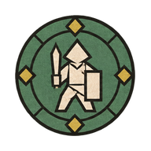
spell.deng.protectspell · 已绑定运行资源
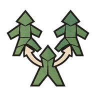
spell.deng.clonespell · 已绑定运行资源
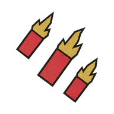
spell.deng.firespell · 已绑定运行资源
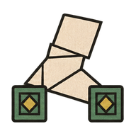
spell.deng.rootspell · 已绑定运行资源
spell.deng.guardianspell · 已绑定运行资源
building.yin.basebuilding · 已绑定运行资源
building.mo.basebuilding · 已绑定运行资源
building.deng.basebuilding · 已绑定运行资源
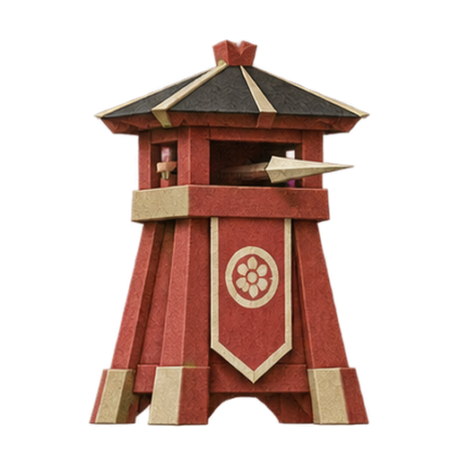
building.yin.towerbuilding · 已绑定运行资源
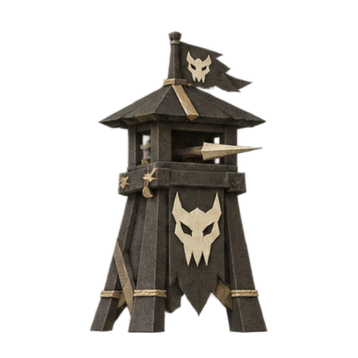
building.mo.towerbuilding · 已绑定运行资源
building.deng.manabuilding · 已绑定运行资源
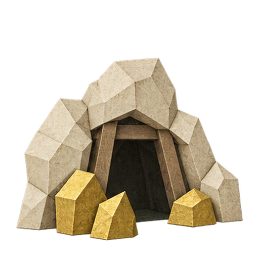
resource.common.mineresource · 已绑定运行资源
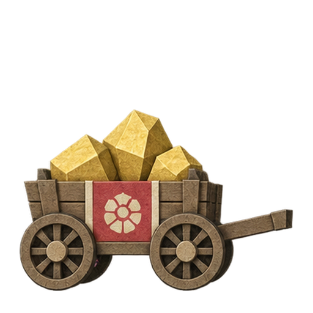
prop.common.gold-cartprop · 已绑定运行资源
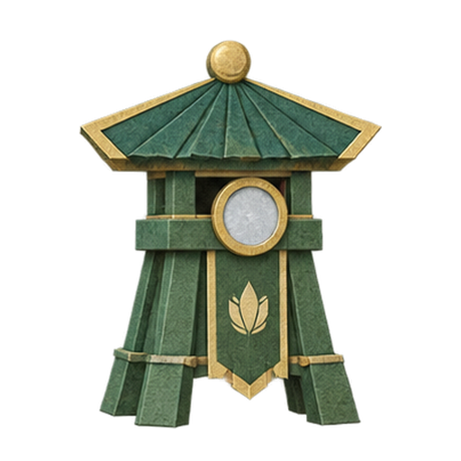
building.deng.towerbuilding · 已绑定运行资源
ui.goldui · 已绑定运行资源
ui.manaui · 已绑定运行资源
ui.techui · 已绑定运行资源
ui.cancelui · 已绑定运行资源
ui.homeui · 已绑定运行资源
ui.frontui · 已绑定运行资源
ui.navigateui · 已绑定运行资源
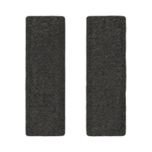
ui.pauseui · 已绑定运行资源
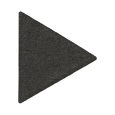
ui.resumeui · 已绑定运行资源
ui.soundui · 已绑定运行资源
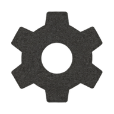
ui.settingsui · 已绑定运行资源
ui.lockui · 已绑定运行资源
ui.infoui · 已绑定运行资源
ui.victoryui · 已绑定运行资源
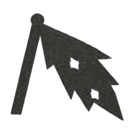
ui.defeatui · 已绑定运行资源
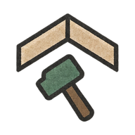
ui.buildui · 已绑定运行资源
texture.paper.ivorytexture · 已绑定运行资源
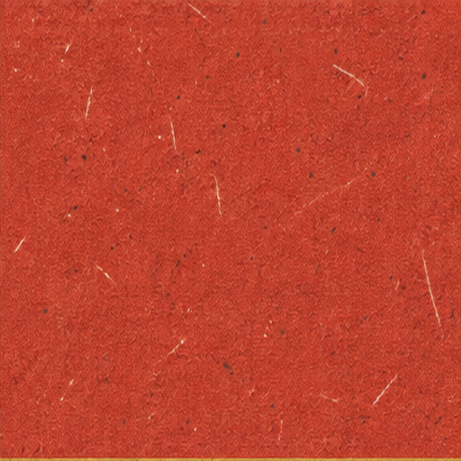
texture.paper.redtexture · 已绑定运行资源
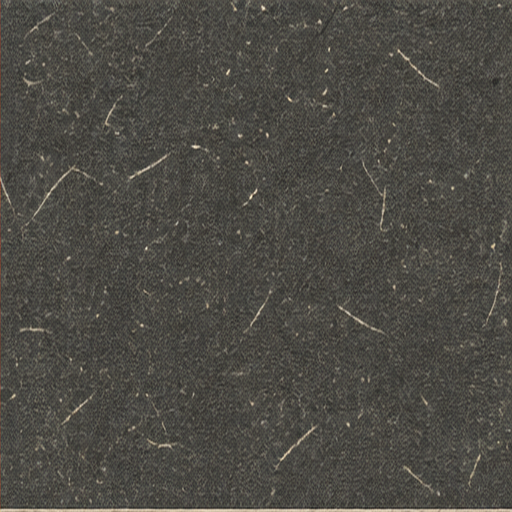
texture.paper.inktexture · 已绑定运行资源
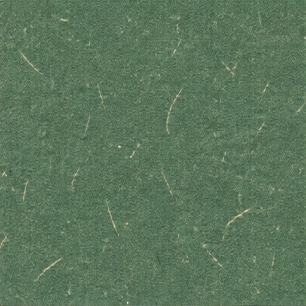
texture.paper.jadetexture · 已绑定运行资源
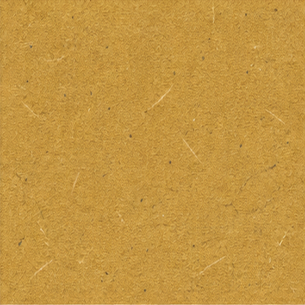
texture.paper.goldtexture · 已绑定运行资源
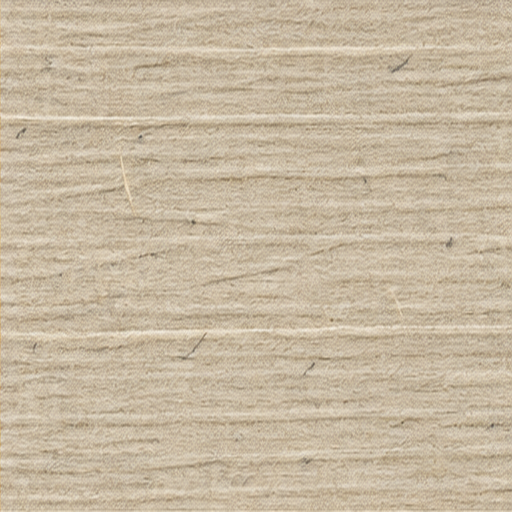
texture.paper.edgetexture · 已绑定运行资源
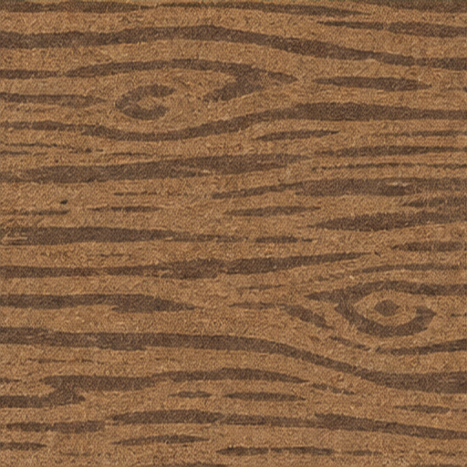
texture.paper.woodtexture · 已绑定运行资源
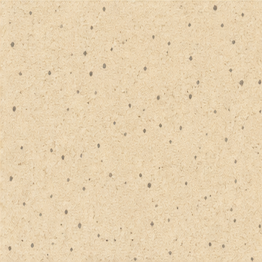
texture.ground.pathtexture · 已绑定运行资源
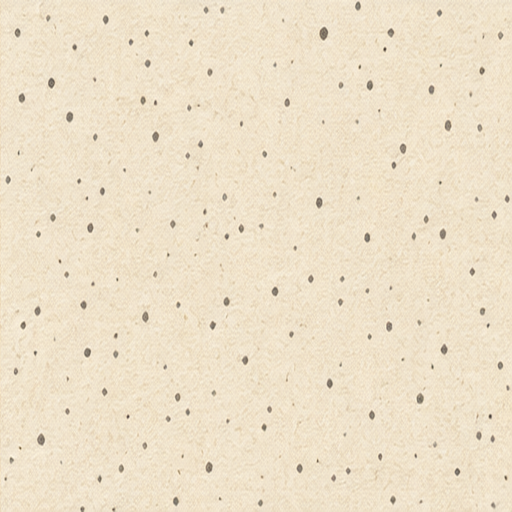
texture.ink.graintexture · 已绑定运行资源
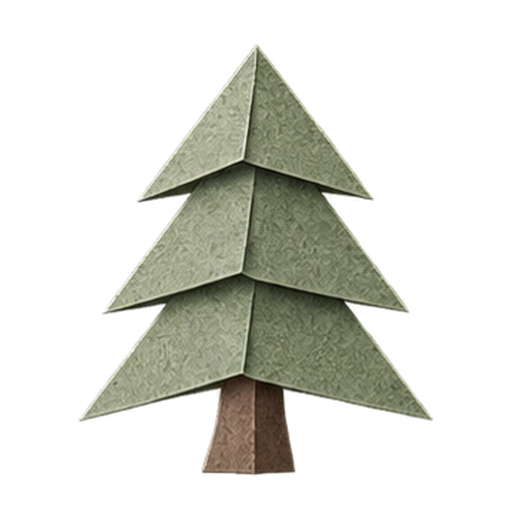
prop.terrain.pineprop · 已绑定运行资源
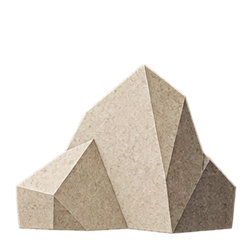
prop.terrain.rockprop · 已绑定运行资源
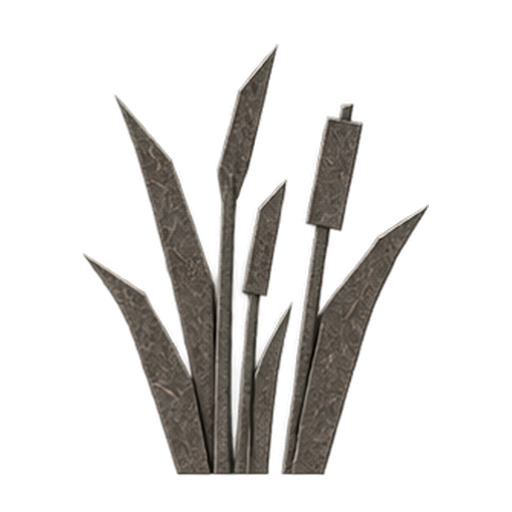
prop.terrain.reedsprop · 已绑定运行资源
prop.terrain.archprop · 已绑定运行资源
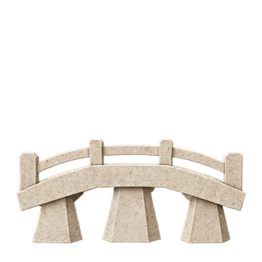
prop.terrain.bridgeprop · 已绑定运行资源
prop.yin.bannerprop · 已绑定运行资源
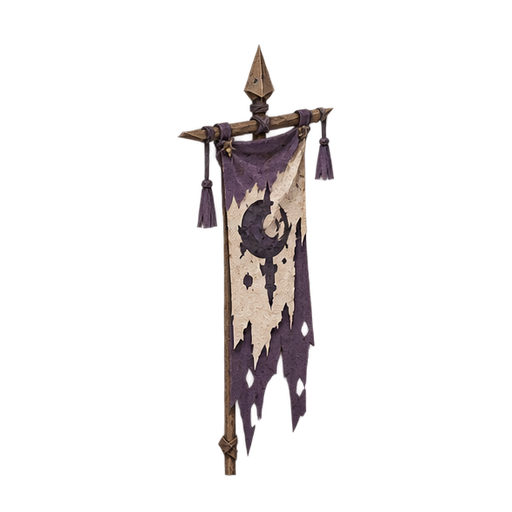
prop.mo.bannerprop · 已绑定运行资源
prop.deng.bannerprop · 已绑定运行资源
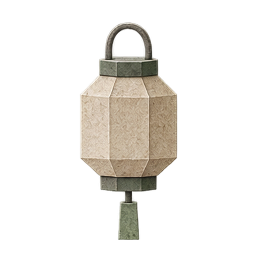
prop.terrain.lanternprop · 已绑定运行资源
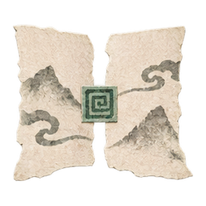
fx.repairfx · 已绑定运行资源
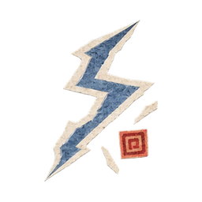
fx.lightningfx · 已绑定运行资源
fx.coldfx · 已绑定运行资源
fx.impactfx · 已绑定运行资源
fx.sacrificefx · 已绑定运行资源
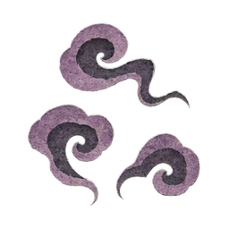
fx.poisonfx · 已绑定运行资源
fx.controlfx · 已绑定运行资源
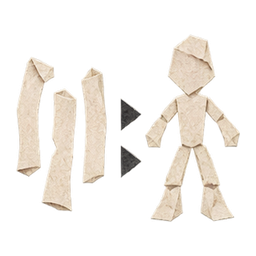
fx.summonfx · 已绑定运行资源
fx.protectfx · 已绑定运行资源
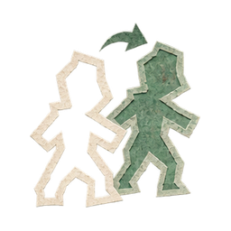
fx.clonefx · 已绑定运行资源
fx.firefx · 已绑定运行资源
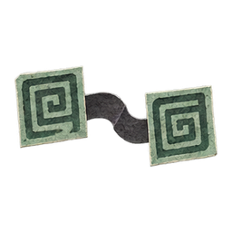
fx.rootfx · 已绑定运行资源
background.stamp-plainbackground · 已绑定运行资源
background.ink-marshbackground · 已绑定运行资源
background.lantern-ridgebackground · 已绑定运行资源
audio.ui.clickaudio · 已绑定运行资源
audio.ui.cancelaudio · 已绑定运行资源
audio.ui.invalidaudio · 已绑定运行资源
audio.ui.researchaudio · 已绑定运行资源
audio.ui.recruitaudio · 已绑定运行资源
audio.ui.goldaudio · 已绑定运行资源
audio.combat.paper-stepaudio · 已绑定运行资源
audio.combat.slashaudio · 已绑定运行资源
audio.combat.throwaudio · 已绑定运行资源
audio.combat.hitaudio · 已绑定运行资源
audio.combat.heavyaudio · 已绑定运行资源
audio.combat.cannonaudio · 已绑定运行资源
audio.combat.deathaudio · 已绑定运行资源
audio.magic.repairaudio · 已绑定运行资源
audio.magic.inkaudio · 已绑定运行资源
audio.magic.sealaudio · 已绑定运行资源
audio.magic.cloneaudio · 已绑定运行资源
audio.result.victoryaudio · 已绑定运行资源
audio.result.defeataudio · 已绑定运行资源
audio.warning.baseaudio · 已绑定运行资源
audio.music.yinaudio · 已绑定运行资源
audio.music.moaudio · 已绑定运行资源
audio.music.dengaudio · 已绑定运行资源